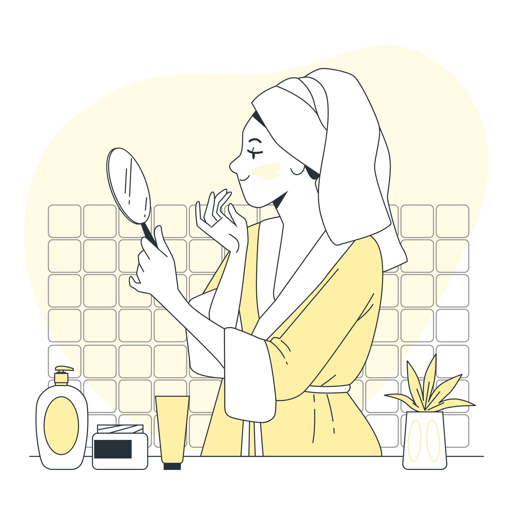

Dry skin :
1.Remove Tan
Exfoliate: Mix 1 tbsp gram flour (besan) with milk or honey for a gentle paste. Massage for 1 minute, rinse with cool water. (Gram flour buffs away dead skin, milk/honey nourish)
Brighten: Apply store-bought Vitamin C serum. (Vitamin C brightens)
Hydrate: Use a hydrating moisturizer with hyaluronic acid and ceramides.
2.Reduce Acne Scars:
Exfoliate: Same as above (gram flour paste).
Soothe & Brighten: Mix aloe vera gel with honey, apply for 15 minutes, rinse with cool water. (Aloe soothes, honey brightens)
Moisturize: Apply cold-pressed coconut oil.
3.Instant Glow:
Exfoliate: Mix 1 tbsp gram flour (besan) with milk or honey for a gentle paste. Massage for 1 minute, rinse with cool water. (Gram flour buffs away dead skin, milk/honey nourish)
Hydrate & Plump: Mash 1 ripe banana, apply for 15 minutes, rinse with cool water.
Glow Boost: Apply chilled aloe vera gel, leave on for 10 minutes or use as a primer (optional).
4.Reduce Pigmentation:
Cleanse & Exfoliate Gently: Use a gentle cleanser. 2-3 times a week, use the gram flour paste with milk/honey.
Brighten & Hydrate: Apply Vitamin C serum, followed by a hydrating moisturizer with ceramides.
Treat & Protect: Apply cold-pressed coconut oil before bed, use sunscreen daily (SPF 30+, non-comedogenic).
Combination Skin:
1.Remove Tan:
Cleanse & Target: Use a gentle cleanser. Apply diluted lemon juice to your T-zone (forehead, nose, chin) and a milk & honey mix to cheeks/jawline. Rinse after 10 minutes.
Exfoliate: Mix 1 tbsp gram flour (besan) with yogurt/milk to make a paste. Massage gently for 1 minute, rinse with cool water.
Moisturize: Apply oil-free moisturizer to T-zone and a richer cream to dry areas.
2.Instant Glow (Skip step 2):
Cleanse & Absorb: Same as above. Wash face twice daily with a gentle cleanser. Throughout the day, use blotting papers to absorb excess oil.
Exfoliate & Balance: Mix Multani Mitti (Fuller's earth) with rose water to make a paste. Apply for 10 minutes, rinse with cool water. (Helps remove excess oil and tighten pores)
Glow Boost: Apply chilled aloe vera gel as a primer.

Sensitive Skin:
*Focus on gentle ingredients for all concerns*:
1.Remove Tan:
Cleanse & Soothe: Wash with lukewarm water and a fragrance-free cleanser. Apply chilled rose water as a toner.
Brighten & Soothe: Mix aloe vera gel with a few drops of honey, apply for 15 minutes, rinse with cool water.
Hydrate & Protect: Apply a light layer of cold-pressed coconut oil. Use sunscreen specifically formulated for sensitive skin (SPF 30+).
2.Reduce Acne Scars & Instant Glow :
Cleanse & Soothe: Wash with lukewarm water and a fragrance-free cleanser. Apply chilled rose water as a toner.
Moisturize & Protect: Apply a fragrance-free moisturizer and sunscreen (SPF 30+).
3.Reduce Pigmentation:
Cleanse & Soothe: Wash with lukewarm water and a fragrance-free cleanser. Apply chilled rose water as a toner.
Brighten & Soothe: Use a store-bought, gentle brightening serum.
Treat & Protect: Apply cold-pressed coconut oil, use sunscreen daily (SPF 30+, non-comedogenic).